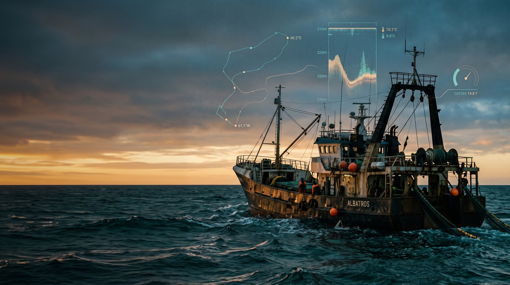
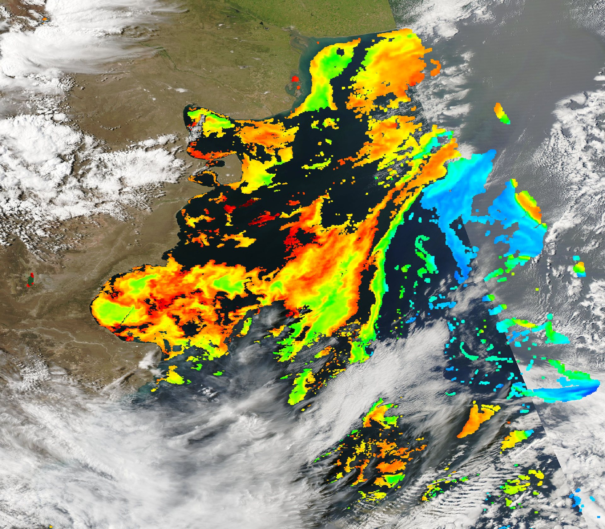
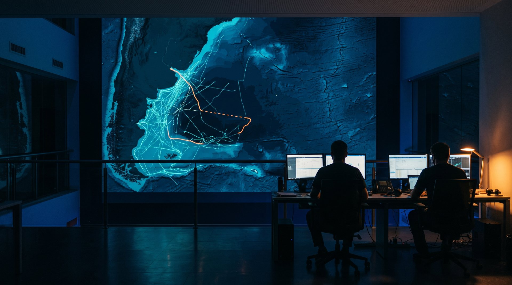
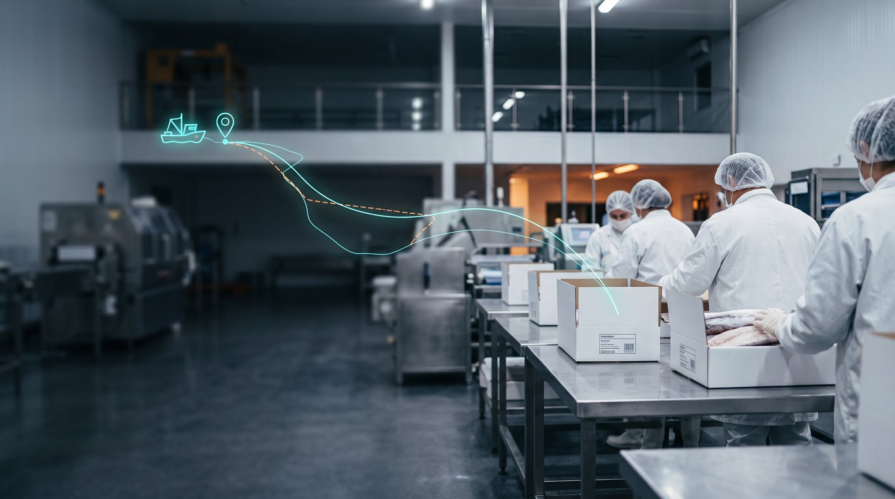

Ing. Cristina Fernández · Co-dirección: Ing. Soraya Corvalán
Articulación
SENASA (convenio 2024) · CAPIP (convenio marco 2023) · INIDEP
Departamento de Ingeniería Pesquera · UTN Facultad Regional Chubut · comunidad PesquerosEnIA
El recorrido
Estamos en la estación 4
Repaso · Clase 1 · Estrategia y transformación digital
La paradoja del dato pesquero
El sector genera datos todo el tiempo… y los subutiliza. La transformación no es comprar tecnología: es decidir mejor con lo que ya tenemos.
Smart Fisheries: barco, planta y cadena conectados.
Cinco casos de uso de IA en la pesca, de la zona de pesca a la planta.
La brecha argentina es también la oportunidad.
Doctrina del Grupo · Nicolás
Se demuestra. No se impone.
Doctrina del Grupo · Claudio
Sin línea de base no hay nada que demostrar.
Datos · el contexto global · FAO, SOFIA 2024
Por qué decidir con datos ya no es opcional
PRODUCCIÓN MUNDIAL DE ANIMALES ACUÁTICOS · 2022 (millones de t)
Por primera vez, la acuicultura supera a la captura en producción de animales acuáticos.
ESTADO DE LAS POBLACIONES EVALUADAS · 2021
Casi 4 de cada 10 poblaciones pesqueras evaluadas están sobreexplotadas.
FAO (2024). El estado mundial de la pesca y la acuicultura 2024 (SOFIA). La transformación azul en acción. Roma.
Repaso · Clase 2 · Fundamentos de IA y LLM (Damián)
Cinco capas que ya conviven
LAS CUATRO ZONAS DE RIESGO
1 · Alucina
Inventa cifras y normas con total seguridad.
2 · Verificá
Lo regulatorio lo confirma una persona.
3 · Privacidad
Datos comerciales, fuera de IA pública.
4 · Espejismos
Un VLM describe; no mide.
Repaso · Clase 3 · Prompting y diseño de asistentes (Damián)
El prompt es la interfaz
SEIS TÉCNICAS, UNA PROGRESIÓN
Todo practicado sobre Fishy, el asistente conectado a la base del curso (MCP).
Guardrail blando
Una instrucción en el texto: funciona mientras el modelo la respete.
Guardrail duro
La restricción vive afuera: el permiso no existe, la herramienta no está, o hace falta un click humano.
Cierre del desafío · «El asistente que liberó el lote» · 8 autopsias
La IA recomienda. La regla bloquea. La persona firma.
Nueva ley en la Doctrina · Estación 12
🏆 Pablo Di Filippo
«El error de la IA fue solamente el primer fallo; el diseño del sistema permitió que ese error llegara hasta el cliente.»
Menciones: Nicolás Córdoba · Carla Campos · Agustín Fermín · Ana Clara Arcuri
El puente a hoy
En el caso del lote, el dato estaba. Lo que faltó fue integrarlo.
Hoy: de dónde salen los datos del mar, de la flota y de la planta — y cómo se cruzan sin engañarnos.
Un dato que no se integra no es un dato. Es un archivo.Marcelo Yanguela · desafío del lote
Parte 1 · El ecosistema de datos
Un barco genera datos 24/7

🖼️ Imagen pendiente img/c4_marea_datos.jpgVer el prompt en img/PROMPTS_imagenes.md
Parte 1 · El ecosistema de datos
Cada marea es una fábrica de datos
Posición, velocidad, fondo, temperatura, kilos por lance. El barco ya mide todo: el desafío es no tirar lo que mide.
Imagen ilustrativa generada con IA
Parte 1 · El ecosistema de datos
Dos mundos de datos, un mismo mar
A bordo · lo genera tu operación
Small Data operativo
GPS, ecosonda, sensores
Balanza y partes de pesca
Descargas, producción, calidad
Lotes, despachos, clientes
el valor está en el cruce
Externo · lo genera el sector
Big Data sectorial
Satélite: SST, clorofila
Modelos de corrientes
AIS de toda la flota
INIDEP, cuotas y vedas
Parte 2 · Las variables que mandan
La temperatura del mar ordena la pesca
CADA ESPECIE, SU RANGO TÉRMICO (°C)
Se mide por satélite, gratis y a diario.
Los frentes (agua fría + cálida) concentran alimento y peces.
Rangos: guía de la Clase 4 del curso · Fuentes de SST: Copernicus Marine, NOAA CoastWatch, NASA MODIS
Parte 2 · Las variables que mandan
Verde en el mar = alimento
La clorofila-a mide el fitoplancton: el primer eslabón de la cadena que termina en la merluza y el calamar.
🌱 Floración de primavera (septiembre–noviembre): estamos justo en esa ventana. Lo que hoy muestra el satélite anticipa dónde se va a concentrar el recurso.
Fuentes: Copernicus Marine (color del océano) · NASA MODIS-Aqua

🛰️ Imagen satelital REAL pendiente img/c4_satelite_clorofila_patagonia.jpgBajarla de NASA Worldview o Earth Observatory (ver img/PROMPTS_imagenes.md). No usar imagen generada: sería un dato inventado.
Parte 2 · Lo que dice la ciencia
El satélite ve los frentes
La confluencia Brasil–Malvinas se ubica en torno a los 38° S y se desplaza en el tiempo (Olson et al., 1988).
Los frentes de la plataforma austral concentran productividad y recursos pesqueros (Acha et al., 2004).
El frente del talud patagónico muestra altas concentraciones de clorofila, con máximos en primavera (Romero et al., 2006).
Imagen satelital: NASA · clorofila-a sobre color verdadero (dominio público)
Parte 2 · Las variables que mandan
El cruce de capas dice dónde buscar
Ninguna variable sola decide. Juntas arman un mapa de probabilidad.
Ambiente + historial de capturas = modelo predictivo.
Eso es exactamente lo que entrenamos en la Clase 6.
Hoy, en el notebook: captura según rango de SST.
Probalo
Simulador «¿A qué zona voy?» (Clase 6) y «¿Dónde pongo la jaula?» (acuicultura, en esta sección).
Parte 3 · El rastro digital de la flota
AIS y VMS: el mar se volvió transparente
Público · anticolisión
AIS
Posición, rumbo, velocidad e identidad
Alta frecuencia: cada pocos segundos
Cualquiera accede: base de Global Fishing Watch
Se puede apagar
Regulatorio · no público
VMS
Posición satelital periódica
Obligatorio según la normativa
Lo administra la autoridad
Controla vedas y zonas
El AIS y Global Fishing Watch hacen que el mar sea, por primera vez en la historia, genuinamente transparente.David Kroodsma · Science, 2018
Datos · el rastro digital, en cifras
Transparente… pero no del todo
> 55 %
de la superficie del océano tuvo actividad pesquera industrial, según el AIS de más de 70.000 barcos.
Kroodsma et al., 2018 · Science
≈ 75 %
de los pesqueros industriales del mundo no son rastreados públicamente (detectados por imágenes satelitales).
Paolo et al., 2024 · Nature
hasta ~6 %
de la actividad de los pesqueros ocurre con el AIS apagado a propósito. Uno de los focos: el borde de la ZEE argentina.
Welch et al., 2022 · Science Advances
Por eso un solo dato no alcanza: el AIS se cruza con VMS, radar e imágenes satelitales.

🖼️ Imagen pendiente img/c4_centro_monitoreo.jpgVer el prompt en img/PROMPTS_imagenes.md
Parte 3 · El rastro digital de la flota
Del punto en el mapa a la decisión
Un centro de monitoreo no mira barcos: mira patrones. Velocidad, huecos de señal, cruces con zonas de veda.
Imagen ilustrativa generada con IA
Parte 3 · El rastro digital de la flota
La velocidad delata qué hace el barco
REGLA TIPO GLOBAL FISHING WATCH
< 1 nudo · en puerto
1 a 5 nudos · pescando
velocidad de arrastre
> 5 nudos · navegando
La ausencia de un dato también es dato.
Parte 4 · Datos abiertos y formatos
Datos del mar, gratis y a un click
Europa
Copernicus Marine
SST diaria, clorofila, corrientes y reanálisis (GLORYS).
EE. UU.
NOAA · ERDDAP
SST de alta resolución y servidor de datos con descarga directa.
Argentina
INIDEP
Evaluación de recursos, campañas e índices de abundancia.
Global
Global Fishing Watch
Esfuerzo pesquero a partir del AIS, con mapa y API.
Con datos gratuitos
podés elegir zona antes de salir. La barrera ya no es el dato: es saber leerlo.
Parte 4 · Datos abiertos y formatos
Cada dato viene en su formato
CSV · tablas
Partes, lances, descargas. Se abre hasta en una planilla.
NetCDF · cubos
SST y clorofila: una grilla por día. Se lee con xarray.
Shapefile · áreas
Vedas, ZEE, zonas de cultivo: polígonos con coordenadas.
Parte 5 · El dato operativo · Fishy
De la red al cliente: la cadena de datos
Trazabilidad
Tomás cualquier producto vendido y reconstruís la cadena hasta el lance de origen.
Fishy · la base del curso
22 tablas de una operación simulada, de la captura al cliente. Se consulta en lenguaje natural con Claude (MCP).

🖼️ Imagen pendiente img/c4_trazabilidad_planta.jpgVer el prompt en img/PROMPTS_imagenes.md
Parte 5 · El dato operativo
Cada caja cuenta su historia
Del lance al cliente: si el dato viaja con el producto, cualquier caja se reconstruye hasta el barco y la zona de origen.
Imagen ilustrativa generada con IA
Parte 5 · Leer datos sin engañarse · aprendido en los Crímenes del Golfo
Cinco reglas para no equivocarse con datos
REGLA 1
La ausencia de un dato también es dato.
Un AIS apagado 6 h y solo 9 km recorridos: se quedó pescando.
REGLA 2
Un dato solo sospecha. Dos independientes prueban.
AIS + VMS + telemetría del motor: tres fuentes contra una coartada.
REGLA 3
Un dato sin origen no prueba nada.
SST en Fishy: «reconstruido, sin lectura original».
REGLA 4
Contá en proporción.
31 excepciones de 49 descargas (63 %) < 21 de 29 (72 %).
REGLA 5
Un dato sin huso horario no se cruza.
01/09 01:08 UTC = 31/08 22:08 en la planta.
Todas salen de datos reales de Fishy. Las vas a encontrar vos mismo en los tres expedientes de esta semana.
Manos a la obra · Notebook en Colab
Del dato al insight, sin instalar nada
🟢 Novato
Solo ▶ y observar
SST, clorofila y a qué temperatura se pesca más.
🟡 Intermedio
Flujo completo + 2 ejercicios
Mover el frente de clorofila; estacionalidad del óptimo de SST.
🔴 Avanzado
Pipeline real
Ingesta Copernicus con xarray, frentes por gradiente, sesgos.
📍 En el aula: sección Clase 4 → Recursos del repo → notebook de tu nivel → «Abrir en Colab». Si te trabás: cambiá un número y volvé a correr la celda. No se rompe nada.
▶
En el aula esta semana · casos aplicados
Para jugar con los datos
Fiscalización
🎛️ Rastro AIS · DT-011
Clasificá la actividad por velocidad y apagá el transpondedor.
Operación
🗄️ El dato operativo
El modelo de datos de la cadena y la reconciliación, con datos de Fishy.
Acuicultura
🐟 La jaula y el sitio
La corriente como dato de sensor; cruzar capas para ubicar un cultivo.
🔎 Desafío de la semana · Crímenes del Golfo
Sos el inspector. Los datos son las pistas.
01 · El apagón del Don Alberto
02 · El sospechoso de siempre
03 · La noche del túnel
Cierre
Lo que nos llevamos hoy
Esta semana
Tarea: explorá un dato ambiental de tu zona
Cuestionario de 5 preguntas
Crímenes del Golfo 01 → 03
Próximas estaciones
Clase 5 · Arquitectura de datos y Big Data (Damián): cómo se integran sensores, nube y procesamiento masivo.
Clase 6: con estos datos entrenamos un modelo que recomienda la zona de pesca.
Fuentes de esta presentación
Bibliografía
Acha, E. M., Mianzan, H. W., Guerrero, R. A., Favero, M. y Bava, J. (2004). Marine fronts at the continental shelves of austral South America: physical and ecological processes. Journal of Marine Systems, 44, 83–105.
FAO (2024). El estado mundial de la pesca y la acuicultura 2024. La transformación azul en acción. Roma: FAO.
Kroodsma, D. A. et al. (2018). Tracking the global footprint of fisheries. Science, 359(6378), 904–908.
Olson, D. B., Podestá, G. P., Evans, R. H. y Brown, O. B. (1988). Temporal variations in the separation of Brazil and Malvinas Currents. Deep-Sea Research, 35(12), 1971–1990.
Paolo, F. S. et al. (2024). Satellite mapping reveals extensive industrial activity at sea. Nature, 625, 85–91.
Romero, S. I., Piola, A. R., Charo, M. y Garcia, C. A. E. (2006). Chlorophyll-a variability off Patagonia based on SeaWiFS data. Journal of Geophysical Research, 111, C05021.
Welch, H. et al. (2022). Hot spots of unseen fishing vessels. Science Advances, 8(44).
Datos operativos: Fishy, base sintética del curso (MCP). Rangos térmicos por especie y productos satelitales: guía de la Clase 4.
IA aplicada a la producción pesquera · Clase 4
El dato estaba. Ahora sabemos leerlo.
Nos vemos en el aula y en la comunidad PesquerosEnIA.